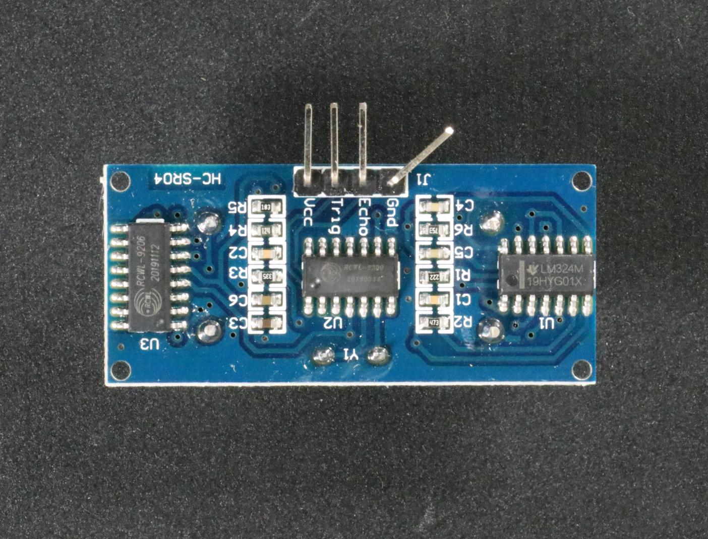
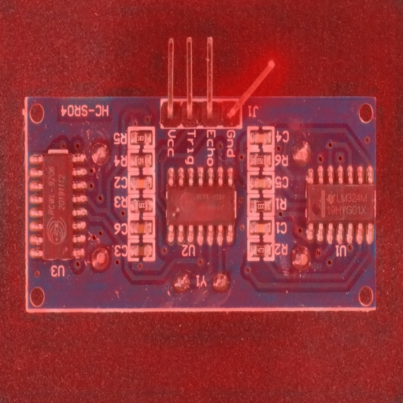
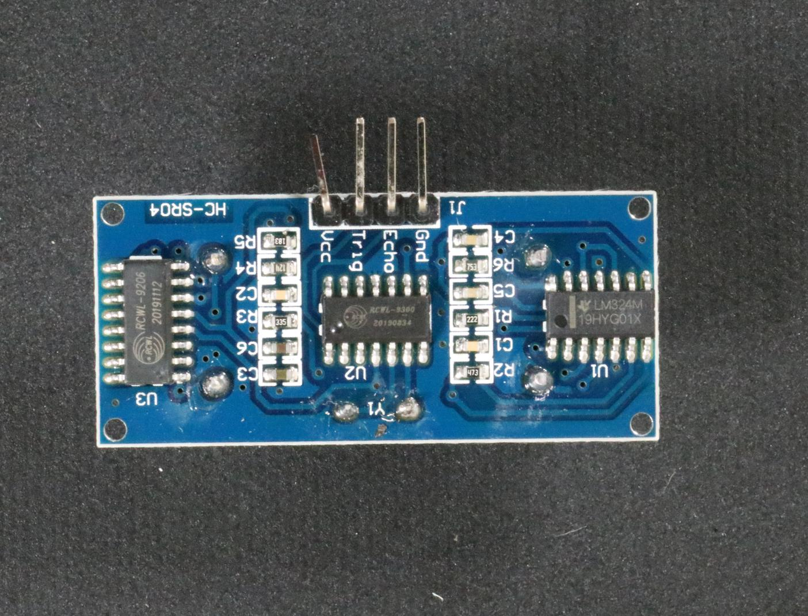
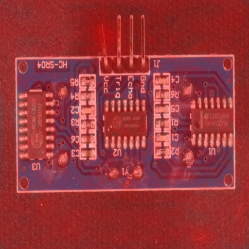
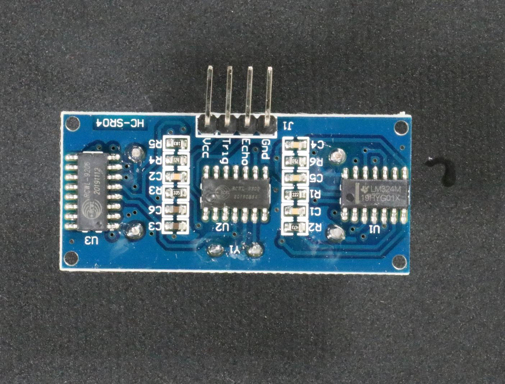
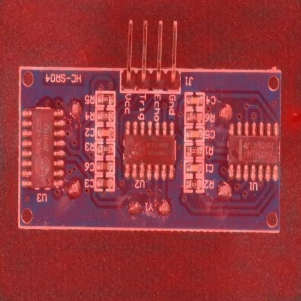

The problem
Small defects can disappear when a full board image is resized. I am exploring normal-only learning for inspection, with explicit trade-offs between missed defects and false alarms.
PCB2 · development comparison
What changes when you look closer?
50 anomalous + 50 normal images. Each model normal-calibrated. Local laptop CUDA timings; independent evaluation pending.
My contribution
I built a Python CLI spanning data preparation, training, threshold calibration, prediction, evaluation and benchmarking. The implementation includes a NumPy reference and a GPU PatchCore variant with frozen Wide ResNet-50-2 features.
The approach
Deterministic manifests, duplicate screening and frozen artifacts support reproducible comparisons. I compared full-frame 256 px inputs with board crops at 256 and 512 px, using normal-only calibration for each configuration.
Results & learning
On the PCB2 development split, cropped 512 px input found 43 of 50 defects and flagged 1 of 50 normal images. Full-frame 256 px found 36 defects and flagged 3 normals. Median decode-plus-inference time increased from 22.8 to 38.5 ms.
| Configuration | Detected | False alarms | AUROC | Median |
|---|---|---|---|---|
| Full 256 | 36/50 | 3/50 | 0.9308 | 22.8 ms |
| Crop 256 | 41/50 | 2/50 | 0.9564 | 25.2 ms |
| Crop 512 | 43/50 | 1/50 | 0.9888 | 38.5 ms |
Latency: warm-cache, batch one, RTX 5070 Ti Laptop GPU; 3 warmups / 20 repetitions, decode + inference, excluding model loading and output writing. The reserved holdout has not been evaluated. Source documentation reports 29 local unit tests; these were not rerun for this portfolio.
Recorded results / PCB2 crop 512
One model. Three outcomes.
Browse a detected defect, a missed defect and a false alarm from the same development evaluation. These are saved predictions; no image upload or live inference is required.
Defect detected




The anomalous image scores above the threshold and is correctly flagged.
Defect missed




The anomalous image falls just below the threshold. A visually plausible overlay does not guarantee a correct image-level decision.
False alarm




The dataset labels this image normal, but its score exceeds the threshold. This is an unnecessary reject.
The decision is anomalous when score > threshold; the score is not a probability. Input images and overlays have different coordinates because of cropping and resizing. Redness is a qualitative anomaly visualization, not a segmentation mask. These deliberately selected examples are not a representative sample.
Images: VisA / Amazon Science, Yang Zou and coauthors, CC BY 4.0. Overlay modifications by Amit. Full attribution · Exact scores and provenance.
What this establishes
Evidence reviewed 13 October 2026. Read source and attribution notes.